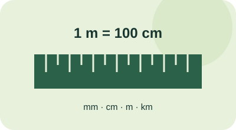

Від міліметра до кілометра
Одна довжина.
Різні одиниці.
Оберіть одиниці, дізнайтеся співвідношення та збережіть потрібні перетворення в одному місці.
Конвертер
Введіть довжину та оберіть потрібні одиниці.
Історія
Ваші перетворення в цій сесії.
Записів: 0
Історія поки порожня. Перше перетворення з’явиться тут.
Одиниці довжини
Усі коефіцієнти відносно одного метра.
| Одиниця | У метрах |
|---|---|
| Міліметр | 0,001 |
| Сантиметр | 0,01 |
| Метр | 1 |
| Кілометр | 1 000 |
Перетворення змінює запис величини, а її фізична довжина залишається тією самою.
Як це працює
Два прості кроки через базову одиницю.

- 1. Перевести в метри.
Помножте значення на коефіцієнт початкової одиниці. - 2. Перевести в нову одиницю.
Поділіть на коефіцієнт кінцевої одиниці.